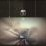

곡설명

브라운아이드소울 싱글 프로젝트의 시작! 나얼 솔로 첫 싱글 [같은 시간 속의 너]
나얼의 가창력에 별다른 설명과 수식어가 필요할까? '와 노래 정말 잘한다.'라고 느끼는 순간 한 옥타브를 올려서 카타르시스를 배가시키는 그의 가창에는 이견을 찾기 어렵다. 하지만 소울의 원형과 아날로그를 좇는 나얼의 음악 행보는 앨범의 가치를 높이지만 동시에 다수 대중에게 낯선 음악으로 인식될 수 있다.